vec2mat_sol
Transforms the solution matrix for a vector-valued IVP into the solution array for the corresponding matrix-valued IVP.
Back to IVP Solver Toolbox Contents.
Contents
Syntax
M = vec2mat_sol(y) M = vec2mat_sol(y,p)
Description
M = vec2mat_sol(y) transforms the solution matrix, 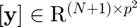 (y in MATLAB), for the vector-valued IVP into the solution array, 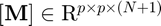 (M in MATLAB) for the corresponding matrix-valued IVP. It is assumed that 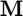 is a square matrix.
M = vec2mat_sol(y,p) transforms the solution matrix, 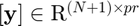 (y in MATLAB), for the vector-valued IVP into the solution array, 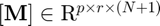 (M in MATLAB) for the corresponding matrix-valued IVP. p specifies the number of rows of M.
Input/Output Parameters
| Variable | Symbol | Description | Format | |
| Input | y | solution matrix | (N+1)×pr double |
|
| p | (OPTIONAL) number of rows of state matrix | 1×1 double |
||
| Output | M | solution array | p×r×(N+1) double |
Note
- If 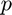 is not input, it is assumed that the state matrix () is a square matrix.
- 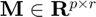
- 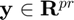
- 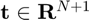
- The nth layer of 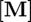 stores the state matrix (i.e. the solution) corresponding to the nth time in 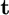.